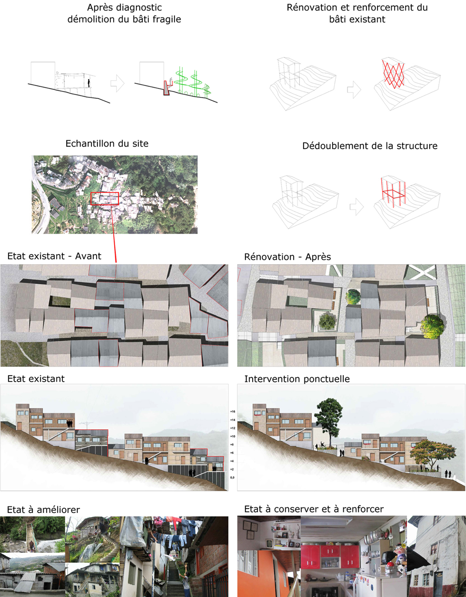

Développement urbain à Manizales, Colombie
Le sujet vise les populations habitant dans des sites à risque notamment sismiques et en zones à forte pente, il cherche à valoriser l’image du quartier et renforcer son lien avec le centre ville. Une réponse architecturale basée sur l’auto-construction et la relance de l’économie locale par l’exploitation des produits et matériaux locaux.
Des peuplements urbains fortuites devenant fixes au cours du temps et se développant le long des cordillères et des flancs de montagnes est un sujet motivant dans ma recherche architecturale. L’expérience d’avoir vécu près des ce type de zone m’introduit à la réflexion sur ce type d’habitat et à la recherche de solutions pour ces populations. Le sujet vise les populations habitant dans des sites à risque notamment sismiques et en zones à forte pente, il cherche à valoriser l’image du quartier et renforcer son lien avec le centre ville. Une réponse architecturale basée sur l’auto-construction et la relance de l’économie locale par l’exploitation des produits et matériaux locaux. L’objectif de ce projet, se déroulant en Colombie dans la ville de Manizales, est d’obtenir une continuité urbaine entre le quartier « Sierra Morena » et le reste de la ville. Le choix du site induittrois niveaux de réponse. Tout d’abord, il s’agit de sécuriser le terrain et ainsi le rendre viable.Ensuite, il s’agit de lier la zone étudiée au centre-ville de Manizales. Enfin, il s’agit de revaloriser l’image d’un quartier défavorisé et délaissé

Une méthode et une approche pour une réponse architecturale dans le tissu existant
Le présent projet est une proposition de rénovation pour le quartier la Sierra Morena en Colombie, ceci dans l’objectif d’améliorer et sécuriser le cadre de vie des habitants. Il participe à l’ouverture du quartier sur Manizales en faisant ressortir les aspects positifs comment sa forte valeur symbolique, son emplacement prés du centre de la ville, une grande capacité pour l’exploitation des cultures de café en grande production et une grande connaissance de l’utilisation du bambou pour la construction. La zone prise est un échantillon représentatif d’une grande problématique que se voit tout au long de la cordillère des Andes en Amérique latine et dans beaucoup d’autres endroits où la construction spontanée et les faibles ressources ont donné naissance à des peuplements proches de divers risques.

Stabilisation, assainissement et désenclavement du site.
Profitant du nouveau passage de la voie, les réseaux d’évacuation, de drainage et autres vont permettre l’évacuation contrôlée de l’eau.Ce réseau s’étalant vers les creux, forme des lignes de descente d’eau. Nous allons le dévier en suivant les courbes de terrain et au fur et à mesure, nous allons ramener cette eau vers les cultures disposées sur ces zones.
Une Méthode par phases
En partant d’une analyse urbaine pour déterminer l’impact d’une intervention lourde comme la construction de murs de soutènement, de voies d’accès, la protection de réseaux, et en prenant en considération la géographie du terrain, j’ai pu établir un programme réparti en différentes actions développées dans ce chapitre.

Rénovation urbaine douce, intervention dans le tissu existant
Dans un premier temps, il faut analyser la quantité de maisons inadaptables dans la zone d’étude et donc de prévoir une démolition. Ceci implique la nécessité de définir le nombre d’habitants à reloger dans des constructions saines. Cette rénovation fait partie d'une organisation en collectivité, recréant des espaces qui vont être liés suites à l’apparition d’une nouvelle trame urbaine, ceci dans le but de recréer une structure urbaine plus organisée. Les habitations existantes, adaptables au projet, font parties de la dynamique de percement liée au projet, les zones démolies seront remplacées ensuite par des infrastructures telles que les places, murs de soutènements, escaliers, cheminements piétonniers, squares pour la population ainsi que de nouveaux logements. Après l'étude du site, nous avons remarqué des endroits reconnus par la communauté, des endroits pouvant être assainis pour ensuite les relier par des cheminements permettant un déplacement moins fatiguant et un meilleur désenclavement pour les habitants.